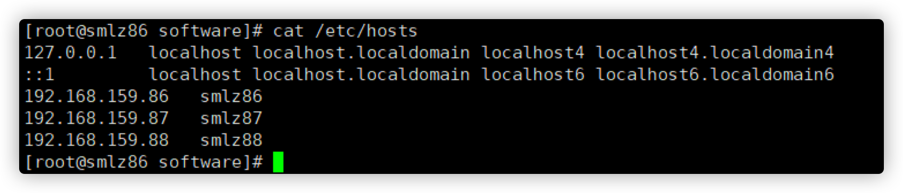
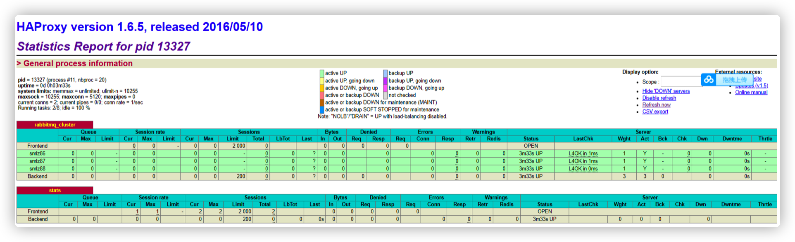

RabbitMQ如何作可靠性消息投递
1. 集群节点安装
1.1 集群节点安装
192.168.159.86，192.168.159.87，192.168.159.88，这里以86服务器单台演示。
- 安装rabbitmq所需要的依赖包
yum install build-essential openssl openssl-devel unixODBC unixODBC-devel make gcc gccc++ kernel-devel m4 ncurses-devel tk tc xz
- 下载安装包（目录是/usr/local/software）
wget www.rabbitmq.com/releases/erlang/erlang-18.3-1.el7.centos.x86_64.rpm
wget http://repo.iotti.biz/CentOS/7/x86_64/socat-1.7.3.2-5.el7.lux.x86_64.rpm
wget www.rabbitmq.com/releases/rabbitmq-server/v3.6.5/rabbitmq-server-3.6.5-1.noarch.rpm

- 安装服务命令
# 第一步: 安装erlang语言环境
rpm -ivh erlang-18.3-1.el7.centos.x86_64.rpm
# 第二步: 安装socat加解密软件
rpm -ivh socat-1.7.3.2-5.el7.lux.x86_64.rpm
# 第三步: 最后安装rabbitmq
rpm -ivh rabbitmq-server-3.6.5-1.noarch.rpm
- 修改集群用户与连接心跳检测
# 修改
vim /usr/lib/rabbitmq/lib/rabbitmq_server3.6.5/ebin/rabbit.app
# 修改 loopback_users 中的 <<"guest">>，只保留guest（不修改只能通过localhost访问）
修改本机系统文件
修改
vim /etc/rabbitmq/rabbitmq-env.conf添加：NODENAME=rabbit
修改 vim /etc/hostname

修改本地 vim /etc/hosts

- 验证单台服务器是可用的
cd /usr/local
rabbitmqctl start_app
# 启动插件
rabbitmq-plugins enable rabbitmq_management

# 检查端口
lsof -i:5672

ps -ef|grep rabbitmq

访问地址：http://192.168.159.86:15672
87，88节点按照以上的步骤进行想同的操作
选择86服务器一个主节点（master）把86的Cookie文件同步到87、88节点上去
cd /var/lib/rabbitmq
# 文件的权限修改为777，原来是400
chmod 777 /var/lib/rabbitmq/.erlang.cookie
# 把.erlang.cookie文件copy到各个节点下
# 最后把所有cookie文件权限还原为400
# copy 86的.erlang.cookie文件到87、88上
scp /var/lib/rabbitmq/.erlang.cookie 192.168.159.87:/var/lib/rabbitmq
scp /var/lib/rabbitmq/.erlang.cookie 192.168.159.88:/var/lib/rabbitmq
- 启用集群命令
cd /usr/local
# 在86、87、88机器上先执行停止命令
rabbitmqctl stop
# 在三台服务器上86、87、88上执行 下面的命令（启动集群命令）
rabbitmq-server -detached
# 切换到87的机器上执行下面三条命令（同样目录都是再/usr/local下执行的）
rabbitmqctl stop_app
rabbitmqctl join_cluster
rabbit@tyrival86 rabbitmqctl start_app
# 切换到88的机器上执行下面三条命令（同样目录都是再/usr/local下执行的）
rabbitmqctl stop_app
rabbitmqctl join_cluster
rabbit@tyrival86 rabbitmqctl start_app
# 修改集群名称: 在86上执行给命令(/usr/local)
rabbitmqctl set_cluster_name rabbitmq_cluster_tyrival
# 查看集群状态
rabbitmqctl cluster_status

三台服务随意访问地址
访问任意一个管控台节点：http://192.168.159.86:15672
- 配置镜像队列
# 在任意节点上执行
rabbitmqctl set_policy ha-all "^" '{"ha-mode":"all"}'
将所有队列设置为镜像队列，即队列会被复制到各个节点，各个节点状态一致， RabbitMQ高可用集群就已经搭建好了，我们可以重启服务，查看其队列是否在从 节点同步
- 剔除节点命令
rabbitmqctl forget_cluster_node rabbit@节点名称(比如tyrival87 tyrival88)
2. 安装HaProxy（192.168.159.89）
2.1 Haproxy简介
HAProxy是一款提供高可用性、负载均衡以及基于TCP和HTTP应用的代理软件，HAProxy是完全免费的、借助HAProxy可以快速并且可靠的提供基于TCP和 HTTP应用的代理解决方案。
HAProxy适用于那些负载较大的web站点，这些站点通常又需要会话保持或七层处理。 HAProxy可以支持数以万计的并发连接，并且HAProxy的运行模式使得它可以很
简单安全的整合进架构中，同时可以保护web服务器不被暴露到网络上
2.2 Haproxy安装
- 下载依赖包
yum install gcc vim wget
- 下载haproxy
# 可能要翻墙
wget http://www.haproxy.org/download/1.6/src/haproxy-1.6.5.tar.gz

- 进行解压
cd /usr/local/software
# 解压后会在 /usr/local 中生成一个文件 haproxy-1.6.5文件夹
tar -zxvf haproxy-1.6.5.tar.gz -C /usr/local

- 进入目录、进行编译、安装
# 进入解压目录
cd /usr/local/haproxy-1.6.5
# 编译
make TARGET=linux31 PREFIX=/usr/local/haproxy
# 安装
make install PREFIX=/usr/local/haproxy
# 创建 一个haproxy的目录 用于存放haproxy的配置文件
mkdir /etc/haproxy
# 赋权
groupadd -r -g 149 haproxy
useradd -g haproxy -r -s /sbin/nologin -u 149 haproxy
# 创建配置文件
touch /etc/haproxy/haproxy.cfg

- haproxy.cfg配置文件详解
# lgging options
global
log 127.0.0.1 local0 info
maxconn 5120
chroot /usr/local/haproxy
uid 99
gid 99
daemon
quiet
nbproc 20
pidfile /var/run/haproxy.pid
defaults
log global
# 使用4层代理模式，”mode http”为7层代理模式
mode tcp
# if you set mode to tcp,then you nust change tcplog into httplog
option tcplog
option dontlognull
retries 3
option redispatch
maxconn 2000
contimeout 5s
# 客户端空闲超时时间为60秒，则HA发起重连机制
clitimeout 60s
# 服务器端链接超时时间为15秒，则HA发起重连机制
srvtimeout 15s
# front-end IP for consumers and producters
listen rabbitmq_cluster
# 监听的端口
bind 0.0.0.0:5672
# 配置TCP模式
mode tcp
# 简单的轮询
balance roundrobin
# ============== 超级 超级 重要防止应用程序连接关闭 ==============
timeout client 3h
timeout server 3h
# rabbitmq集群节点配置
# inter 每隔五秒对mq集群做健康检查，2次正确证明服务器可用，2次失败证明服务器不可用，并且配置主备机
server tyrival86 192.168.159.86:5672 check inter 5000 rise 2 fall 2
server tyrival87 192.168.159.87:5672 check inter 5000 rise 2 fall 2
server tyrival88 192.168.159.88:5672 check inter 5000 rise 2 fall 2
# 配置haproxy web监控，查看统计信息
listen stats
bind 192.168.159.89:8100
mode http
option httplog
stats enable
# 设置haproxy监控地址为http://192.168.159.89:8100/rabbitmq-stats
stats uri /rabbitmq-stats
stats refresh 5s
- 启动haproxy
/usr/local/haproxy/sbin/haproxy -f /etc/haproxy/haproxy.cfg
- 查看haproxy是否启动
ps-ef|grep rabbitmq

- haparoxy的监控台访问 http://192.168.159.89:8100/rabbitmq-stats

- 关闭haproxy命令
killall haproxy
3. 集群测试
应用程序客户端连接地址:如下（生产端）

3.1 发送消息到集群

消费端连接配置

启动集群
4. 模拟集群服务器故障
停止主节点86节点

生产端：成功发送
消费端：成功接收